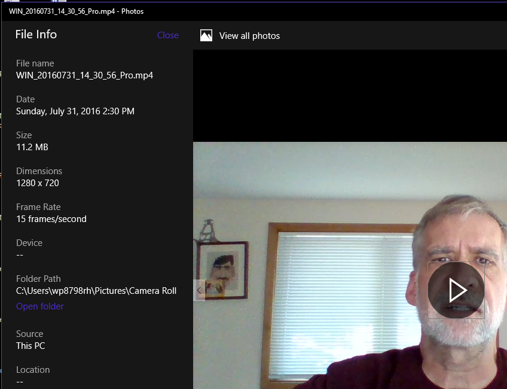
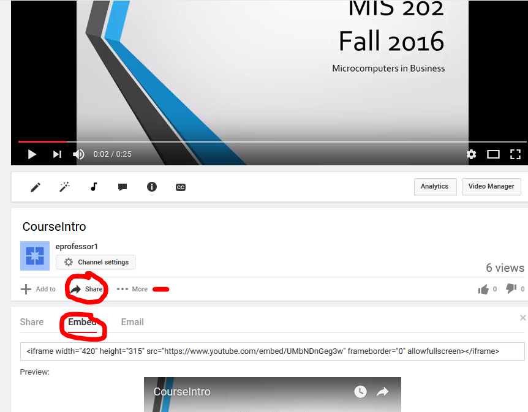

These exercises help you learn several ways various programs can be used to faciliate professional visual business communications. Programs such as Microsoft PowerPoint, Sway, and YouTube have features to improve the quality of your visual communications, and make more efficient use of your time.
After completing this assignment you will be able to use these programs to:
Make sure that Office 2016 is properly setup on your computer before proceeding. If necessary, contact Tech Support in Somsen 207 for assistance.
In this exercise you will decide on a theme for a story that you will tell visually. You can base it on a presentation that you have done for another class, or by using a new storyline, such as what you hope to learn from this class. The purpose is to tell a visual story related to your future career path, or related to something of professional interest to you.
Your task is to create a visual story. If this is your first attempt, do not worry.
Develop your story line.
(50) 1. Write your story line in the field below.
Watch this Lynda.com video on creating a PowerPoint presentation "Learn PowerPoint 2016: The Basics" Download the Exercise Files, play the video on one monitor, have PowerPoint 2016 open on another monitor. Hint: if you need help, go to Lynda.com and search for 'PowerPoint 2016' to find additional tutorials.
Your task is to create a presentation using the exercise files provided.
(50) 2. While working with PowerPoint and completing this exercise, make sure to save the presentation as a series of .gif or .png files. Examine the resulting .png file and note the image resolution, in pixels. Below, enter the image resolution in pixels, of each PowerPoint slide.
(50) 4. In Section 6 'Exporting and Sharing' print a copy of your presentation as an Adobe PDF file. Save the screen shot as "Ex2" in your ' ' folder.
Review this Lynda.com video on telling a story on the web, (22m) "Creating a Sway" Play the video on one monitor, have Sway open on another monitor. Hint: if you want more on what you can do with Sway, go to Lynda.com and search for 'Sway'.
Your task is to create a Sway from the Telecommunications.docx file.
(50) 5. List three sources of input you can use to create a Sway story.
(50) 6.Make a screen shot of the title slide of your Sway presentation. Save the screen shot as "Ex3" in your ' ' folder.
Search for the 'Camera' app. Research and familiarize yourself with the still camera settings. Reflect on the benefits to a business of maintaining a profile of employees that contains each individual's photo.
(50) 7. Briefly list two benefits to a business of having a record of employee photos. Hint: Answer the question 'in what urgent situations do you need to know what someone looks like?'
Use the built-in laptop web camera to take a still portait of yourself, or anything you find interesting. (50) 8. Save the screen shot as "Ex4" in your ' ' folder.
Search for the 'Camera' app. Research and familiarize yourself with the video camera settings. Consider the effects of lighting, background imagery, background noise level and sound quality as you record your video. Use the built-in laptop web camera to record yourself reading the following statement. Proficiency with multiple monitors is helping me be more effective and efficient in MIS 202 Add other text if you wish. Save your video file
Proficiency with multiple monitors is helping me be more effective and efficient in MIS 202
When you are done with your video, open it by clicking the icon in the upper left corner and opening it in the Photos application. Display the File info by clicking the '...' in the upper right corner (if you hover over it you see the message 'see more'). The file info will look something like this:  (50) 9. Use the Snipping Tool to save a screen shot of the file info as "Ex5" in your ' ' folder.
PowerPoint presentations can be used to create several types of visual communication files.
Use a PowerPoint presentation that you created for another class, or make use of the course introduction presentation available on the website. Make sure that you have permission to use any material in these files, and that you are not violating anyone's copyrights, as you will be uploading these files to YouTube.
Being able to create different types of visual content can be very beneficial. There are important lessons to be learned.
(50) 10. Briefly state why one should always save a copy of a presentation in the standard PowerPoint file format, even if you are primarily interested in using PowerPoint to produce an .mp4 video file.
If you do not already have one, sign up for a YouTube account. Research and familiarize yourself with how it works. You are going to upload the .mp4 file that you created in the previous exercise to YouTube. When you upload and publish your video, please make sure it can be viewed by the public. While at the YouTube site admiring your video, at the bottom click 'Share', 'Embed', 'more' so that you can find and adjust the embed code settings: 
(50) 11. Adjust your video size to '420x315'. The remaining default settings are acceptable. Switch Visual Studio to 'Source' view and replace the statement 'Paste your embed code here' that is between the <div> tags with the Embed Code
Use a web browser to verify that you have published your website to https://classes.winona.edu/... Check that your name, StarID, email, class, semester, section and all of your answers are correct and visible. From the menu choose File>Print... and using "Microsoft Print to PDF" save a copy of this assignment as a .pdf file in your ' ' folder.
(50) 12. Save your file 'WebPage.pdf' to the ' ' folder.
Create one .pdf (portable document format) file from the screen shots that you have taken by following these steps.
(50) 13. Save your file 'ScreenShots.pdf' to the ' ' folder.
Use PDFill to merge the WebPage.pdf file with the ScreenShots.pdf file, and save it as 'Summative04.pdf' in ' ' folder.
(50) 14. Upload your file 'Summative04.pdf' to the D2L 'Summative04' Assignment folder.
Use a browser to view your completed and published website at: https://classes.winona.edu/... Ensure that you have linked this assignment on your home page. Note that your screen shots do not have to be completed to perform this step.